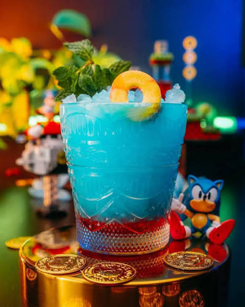

- Step One: Rim a tall glass with simple syrup and dip in sugar
- Step Two: In a cocktail shaker, combine blue raspberry syrup, coconut syrup, and lemon juice. Add the blue food coloring and shake vigorously until well mixed.
- Step Three: Pour the mixture over crushed ice
- Step Four: Top it off slowly with a lemon-lime soda (of your choosing).
- Step Five: Garnish with a peach ring candy on a cocktail pick.
- Step Six: Enjoy!